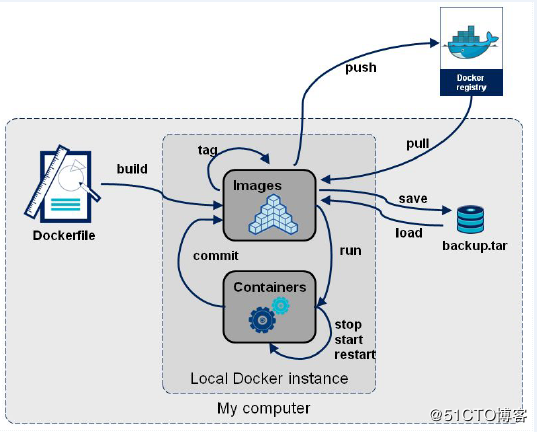

Dockerfile brief introduction
在Docker中创建镜像最常用的方式，就是使用Dockerfile。Dockerfile是一个Docker镜像的描述文件，我们可以理解成火箭发射的A、B、C、D…的步骤。Dockerfile其内部包含了一条条的指令，每一条指令构建一层，因此每一条指令的内容，就是描述该层应当如何构建。


From
指明构建的新镜像是来自于哪个基础镜像
From ubuntu:18.04MAINTAINER
指明镜像维护着及其联系方式（一般是邮箱地址），例如：
MAINTAINER Edison Zhou <edisonchou@hotmail.com>不过，MAINTAINER并不推荐使用，更推荐使用LABEL来指定镜像作者，例如：
LABEL maintainer="edisonzhou.cn"RUN
构建镜像时运行的Shell命令，例如：
RUN ["yum", "install", "httpd"]
RUN yum install httpdADD
拷贝文件或目录到镜像中，例如：
ADD <src>...<dest>
ADD html.tar.gz /var/www/html
ADD https://xxx.com/html.tar.gz /var/www/html
PS：如果是URL或压缩包，会自动下载或自动解压。COPY
拷贝文件或目录到镜像中，用法同ADD，只是不支持自动下载和解压，例如：
COPY ./start.sh /start.shWORKDIR
为RUN、CMD、ENTRYPOINT以及COPY和AND设置工作目录，例如：
WORKDIR /home/zhanVOLUME
指定容器挂载点到宿主机自动生成的目录或其他容器，例如：
VOLUME ["/var/lib/mysql"]
PS：一般不会在Dockerfile中用到，更常见的还是在docker run的时候指定-v数据卷。EXPOSE
声明容器运行的服务端口，例如：
EXPOSE 80 443CMD
启动容器时执行的Shell命令，例如：
CMD ["-C", "/start.sh"]
CMD ["/usr/sbin/sshd", "-D"]
CMD /usr/sbin/sshd -DENTRYPOINT
启动容器时执行的Shell命令，同CMD类似，只是由ENTRYPOINT启动的程序不会被docker run命令行指定的参数所覆盖，而且，这些命令行参数会被当作参数传递给ENTRYPOINT指定指定的程序，例如：
ENTRYPOINT ["/bin/bash", "-C", "/start.sh"]
ENTRYPOINT /bin/bash -C '/start.sh'
PS：Dockerfile文件中也可以存在多个ENTRYPOINT指令，但仅有最后一个会生效。ENV
设置环境内环境变量，例如：
ENV MYSQL_ROOT_PASSWORD 123456
ENV JAVA_HOME /usr/local/jdk1.8.0_45
ENV http_proxy http://proxy:913USER
为RUN、CMD和ENTRYPOINT执行Shell命令指定运行用户，例如：
USER <user>[:<usergroup>]
USER <UID>[:<UID>]
USER edisonzhouHEALTHCHECK
告诉Docker如何测试容器以检查它是否仍在工作，即健康检查，例如：
HEALTHCHECK --interval=5m --timeout=3s --retries=3 \
CMD curl -f http:/localhost/ || exit 1
其中，一些选项的说明：
--interval=DURATION (default: 30s)：每隔多长时间探测一次，默认30秒
-- timeout= DURATION (default: 30s)：服务响应超时时长，默认30秒
--start-period= DURATION (default: 0s)：服务启动多久后开始探测，默认0秒
--retries=N (default: 3)：认为检测失败几次为宕机，默认3次
一些返回值的说明：
0：容器成功是健康的，随时可以使用
1：不健康的容器无法正常工作
2：保留不使用此退出代码ARG
在构建镜像时，指定一些参数，例如：
FROM centos:6
ARG user # ARG user=root
USER $user
这时，我们在docker build时可以带上自定义参数user了，如下所示：
docker build --build-arg user=edisonzhou Dockerfile .Use cases
Case1: 编译执行在一个image里
$ cd /home/zhan
$ touch test.c test.c添加如下内容
#include <stdio.h>
int main(int argc, char* argv[])
{
printf("Hello World!\n");
return 0;
}
$ touch Dockerfile Dockerfile添加如下内容
From ubuntu:18.04
LABEL maintainer="tester.com"
RUN mkdir -p /home/zhan
WORKDIR /home/zhan
COPY test.c .
ENV http_proxy http://proxy:913
RUN apt-get update
RUN apt-get install gcc -y
RUN gcc -g test.c -o test.o
#CMD ["/bin/bash"]
CMD ["./test.o"]构建image
$ docker build -t dockerfile-01:1.0 .
$ docker images
REPOSITORY TAG IMAGE ID CREATED SIZE
dockerfile-01 1.0 cd9a95fccaa9 45 minutes ago 207MB
ubuntu 18.04 4e5021d210f6 6 weeks ago 64.2MB- 第一种执行应用方式: 启动容器直接运行可执行文件
$ docker run -rm dockerfile-01Hello World! - 第二种执行应用方式: 启动容器，进入容器，再手动执行可执行文件
$ docker run -itd –name test01 dockerfile-01 /bin/bash
$ docker exec -it test01 /bin/bash
进入容器可以看到直接到/home/zhan目录，有test.c和test.o两个文件root@bfb87ec4b27a:/home/zhan# ls test.c test.o root@bfb87ec4b27a:/home/zhan#
Case2: 编译执行在两个image里
因为编译生成的image非常大，因此把编译生成的文件再copy到另一个image就减小了体积
Dockfile内容如下
From ubuntu:18.04 as builder # 基于ubuntu:18.04创建第一个image
LABEL maintainer="tester.com"
RUN mkdir -p /home/zhan
WORKDIR /home/zhan
COPY test.c .
ENV http_proxy http://proxy:913
RUN apt-get update
RUN apt-get install gcc -y
RUN gcc -g test.c -o test.o
FROM ubuntu:18.04 # 基于ubuntu:18.04再创建第二个image
WORKDIR /root/
# 从上面的 image "builder" 拷贝编译好的可执行文件/home/zhan/test.o文件到当前image的/root/目录
COPY --from=builder /home/zhan/test.o .
CMD ["./test.o"]构建image
$ docker build -t dockerfile-01:2.0 .
$ docker images
REPOSITORY TAG IMAGE ID CREATED SIZE
dockerfile-01 2.0 f29fa900630d 5 seconds ago 64.2MB
<none> <none> 8bd7003b9cd8 2 minutes ago 207MB
dockerfile-01 1.0 cd9a95fccaa9 45 minutes ago 207MB
ubuntu 18.04 4e5021d210f6 6 weeks ago 64.2MB可以看到新生成的两个image， 一个image为
以后就可以用dockerfile-01:2.0作为项目中的应用docker容器
- 第一种执行应用方式: 启动容器直接运行可执行文件
$ docker run --rm dockerfile-01:2.0
Hello World!- 第二种执行应用方式: 启动容器，进入容器，再手动执行可执行文件
$ docker run -itd --name test02 dockerfile-01:2.0 /bin/bash
baef91591402ac368816b8baf9251859db9aa9e378845d88009ad8dffdcb8028
$ docker exec -it test02 /bin/bash
root@baef91591402:~# ls
test.o
root@baef91591402:~#进入容器可以看到直接进入/root目录，只有可执行文件test.o
Additional
找一个目录新建两个文件app.js和Dockerfile
root@alpha:/home/zhan/images_test# ls
app.js Dockerfileapp.js
const http = require('http');
const os = require('os');
console.log("Kubia server starting ...");
var handler = function(request, response) {
console.log("Received request from" + request.connection.remoteAddress);
response.writeHead(200);
response.end("You've hit " + os.hostname() + "\n");
};
var www = http.createServer(handler);
www.listen(8080);Dockerfile
FROM node:7
ADD app.js /app.js
ENTRYPOINT ["node","app.js"]运行如下命令
$ docker build -t kubia .
$ docker images
$ docker run --name kubia-container -p 8081:8080 -d kubia:latest
$ curl 10.239.140.186:8081 或者 curl http://10.239.1n40.186:8081 (linux添加proxy如child-prc.intel.com:913后用这行命令)
You've hit fef0dd414fe4
// 浏览器输入http://localhost:8081也能返回同样的container ID,
// 如果机器没有添加proxy代理用 $ curl localhost:8081 就可以
$ docker exec -it kubia-container1 bash
$ cat /etc/hostname
fef0dd414fe4 // 发现container的hostname和container ID是一样的十六进制数
$ ps aux // 查看容器内运行的进程
USER PID %CPU %MEM VSZ RSS TTY STAT START TIME COMMAND
root 1 0.0 0.3 813600 26092 ? Ssl 06:58 0:00 node app.js
root 11 0.1 0.0 20244 3232 pts/0 Ss 07:24 0:00 bash
root 17 0.0 0.0 17500 2048 pts/0 R+ 07:26 0:00 ps aux
root@fef0dd414fe4:/#
在宿主主机上运行这个命令 $ ps aux | grep app.js
root 12028 0.0 0.0 21532 1044 pts/1 S+ 15:26 0:00 grep --color=auto app.js
root 30631 0.0 0.3 813600 26092 ? Ssl 14:58 0:00 node app.js
发现进程的ID在容器中与主机上不同, 容器使用独立的PID Linux命名空间并且有着独立的系列号，完全独立于进程树.
正如拥有独立的进程树一样，每个容器也拥有独立的文件系统.
容器内的应用不仅拥有独立的文件系统，还有进程、用户、主机名和网络接口.遇到的问题
docker pull ubuntu等系统镜像后登陆上去，配置公司proxy后无法连接网络，apt-get update无法执行
解决方案: 修改主机上的文件 /etc/docker/daemon.json 内容如下, 添加主机IP:
{ "insecure-registries": ["10.239.140.186"] }之后重启docker
$ systemctl daemon-reload
$ systemctl restart docker.service再次登陆容器配置好proxy, apt-get update就可以执行了
转载请注明来源，欢迎对文章中的引用来源进行考证，欢迎指出任何有错误或不够清晰的表达。可以在下面评论区评论，也可以邮件至 jaytp@qq.com